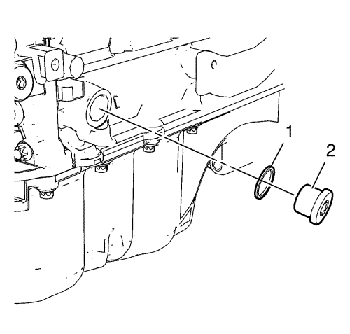
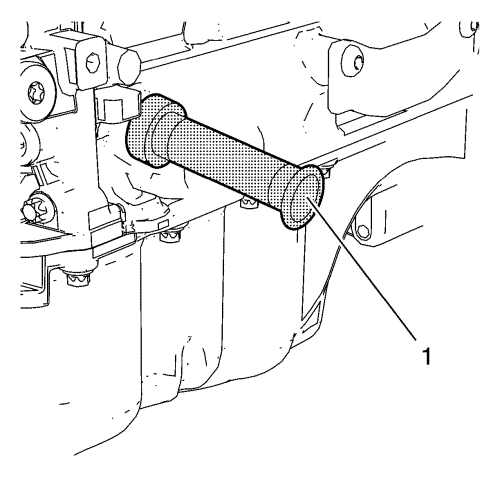

- Desmonte la bobina de encendido. Consultar Desmontaje de la bobina de encendido .
- Desmontar la tapa del árbol de levas. Consultar Desmontaje de la tapa del árbol de levas .

- Gire el motor en sentido horario hasta que el orificio (2) del dámper del cigüeñal se alinee con la marca (1) de la cubierta delantera del motor.
- Compruebe que las ranuras del árbol de levas (1) se ven como se indica. Si las ranuras del árbol de levas no se ven, gire el cigüeñal 360°.

- Desmonte el tapón del orificio de la placa de sujeción del sombrerete del cigüeñal (2) y el anillo de junta (1).

Atención: Para garantizar que el punto muerto superior (PMS) está bien alineado, el pasador de retención debe entrar con facilidad en el orificio de la placa de sujeción del cigüeñal y en el cigüeñal. Si se bloquea el pasador de retención, puede verse afectado el reglaje del motor.
- Monte el pasador de fijación EN-952 (1) para sujetar el cigüeñal en el PMS.

Nota: La herramienta de fijación debe montarse por completo en las dos ranuras del árbol de levas sin mucho esfuerzo.
- Monte la herramienta de fijación EN-953-A (1) en los árboles de levas.
Nota: Es posible montarlo en una posición incorrecta. Asegúrese de que la herramienta de fijación está montada sin holgura en la culata en los puntos (3) y (4).
- Monte la fijación del disco transmisor EN-49977-100 (1) para examinar la posición correcta de las ruedas del excitador de posición del árbol de levas.
- Apriete los tornillos (2) de la fijación del disco del transmisor EN-49977-100.
- Si la herramienta de fijación EN-953-A o la fijación del disco transmisor EN-49977-100 no se puede montar, consulte Ajuste de la cadena de distribución del árbol de levas.
- Desmonte la fijación del disco transmisor EN-49977-100.
- Extraiga la herramienta de fijación EN-953-A.
- Desmonte el pasador de fijación EN-952.
Precaución:Consulte Precaución con las fijaciones en la sección Prólogo.
- Monte el tapón del orificio de la placa de sujeción del cojinete del cigüeñal y el anillo de junta y apriételo a 40 N·m (30 lib. pie).
- Monte la tapa del árbol de levas. Consultar Montaje de la tapa de los árboles de levas .
- Monte la bobina de encendido. Consultar Montaje de la bobina de encendido .